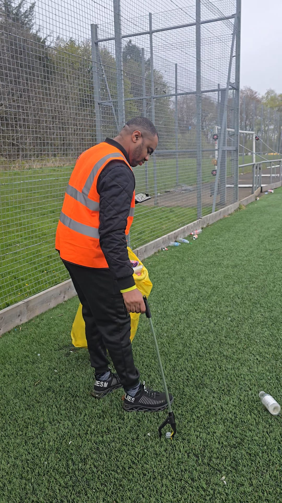

Our Story
Reimagining local communities through sustainability, reuse, and connection.

Reimagining local communities through sustainability, reuse, and connection.
Kigami Projects was created from a desire to make communities cleaner, more responsible, and more connected through practical action.
We saw public spaces being neglected, waste being ignored, and useful items being thrown away while many people and communities still needed support. Instead of waiting for change, we decided to take action ourselves.
We are a community-driven environmental initiative focused on clean-up projects, sustainability awareness, reuse initiatives, and community engagement. Our work includes environmental clean-ups in streets, estates, parks, and public spaces, bus stop clean-up and restoration projects, charity shop initiatives, upcycling projects, and campaigns that encourage people to rethink waste and environmental responsibility.
Through our charity shop and reuse initiatives, we aim to give items a second life, reduce waste, and make affordable goods accessible within communities. Through upcycling, we turn discarded materials into something useful again, showing that sustainability can be practical, creative, and community-led.
Our bus stop clean-up projects were created to improve everyday public spaces that people use constantly but are often overlooked. By restoring and cleaning these spaces, we encourage pride, responsibility, and respect for the environment around us.
At the centre of Kigami Projects is community participation. We believe change happens faster when people work together. We actively involve young people, volunteers, organisations, and local communities in our activities to create visible impact and long-term awareness. In a short time, our message and projects have reached thousands of people online, generating strong engagement and support across our social media platforms. This growing support reflects the need for practical environmental action that people can relate to and participate in directly.
Kigami Projects is not only about cleaning spaces. It is about building a movement that promotes environmental responsibility, sustainability, creativity, community support, and collective action. We believe every cleaned street, restored bus stop, reused item, and upcycled project is a step towards stronger communities and a better environment for everyone.
Reuse. Reduce. Revive.
Join a growing movement focused on sustainability, community empowerment, and environmental action.
Join Our Community